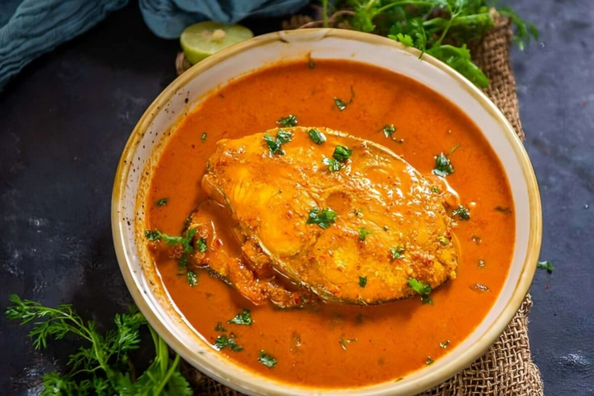
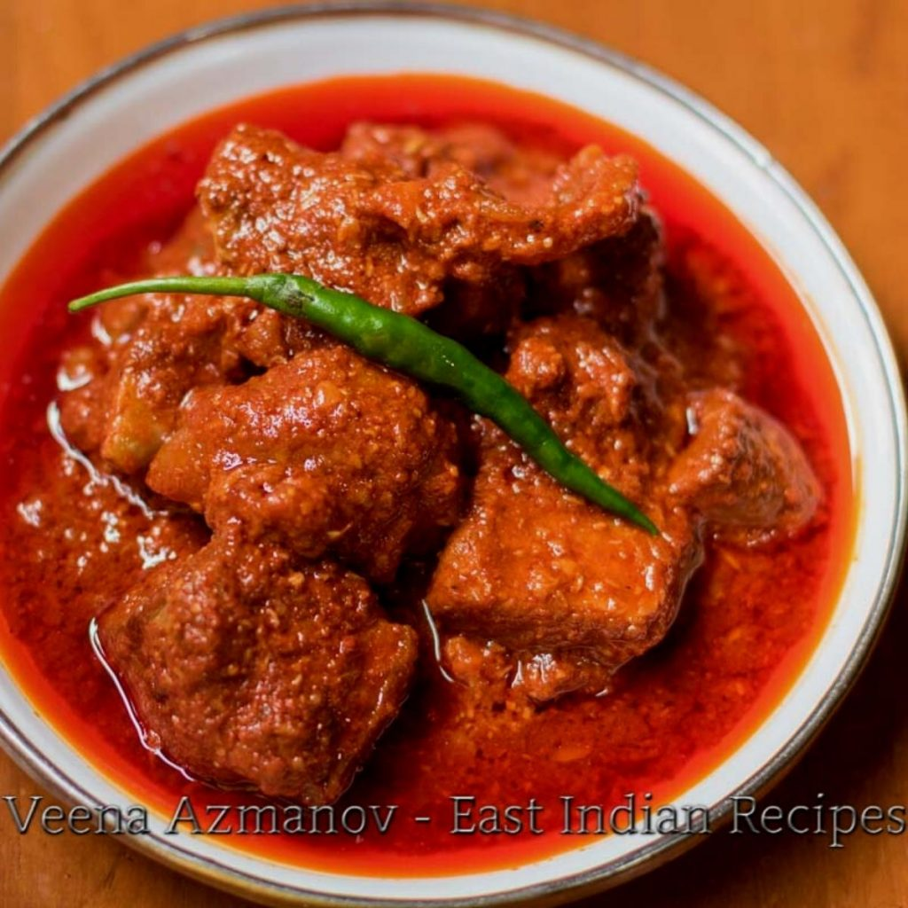
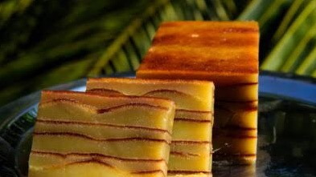
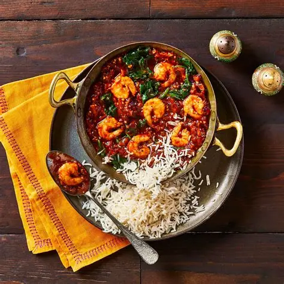
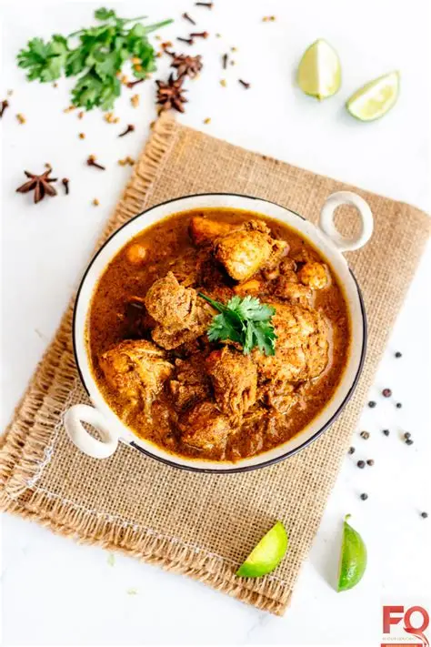
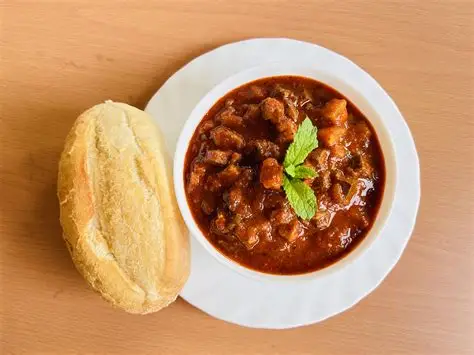

Goan Fish Curry is a popular coastal dish made with fresh fish cooked in a tangy and spicy coconut-based gravy. Flavored with local spices.it has a unique sweet-sour taste. Served hot with steamed rice, it is a staple and favorite meal in Goa.

Pork Vindaloo is a famous Goan curry made with tender pork marinated in vinegar, garlic, and spices. It is known for its fiery, tangy, and flavorful taste. Often enjoyed with steamed rice or bread, it is a signature dish of Goan cuisine.

Bebinca is a traditional Goan dessert made with layers of coconut milk, sugar, eggs, and ghee. Baked slowly to create its signature multi-layered texture, it is rich and indulgent. Sweet, creamy, and flavorful, Bebinca is a must-try treat in Goa.

Prawn Balchão is a traditional Goan dish made with prawns cooked in a tangy, spicy, and slightly sweet masala. Prepared with vinegar, red chilies, and aromatic spices, it has a rich, bold flavor. Typically served with rice or bread, it is a beloved delicacy in Goan cuisine.

Xacuti is a rich and aromatic Goan curry made with chicken or meat cooked in roasted spices and coconut. It is known for its complex flavors, combining heat, nuttiness, and a hint of tanginess. Hearty and flavorful, Xacuti is a classic dish of Goan cuisine, usually served with rice or bread.

Sorpotel is a traditional Goan pork dish cooked with vinegar, spices, and sometimes liver for extra richness. Known for its tangy, spicy, and robust flavor, it is slow-cooked to perfection. Typically served with sannas (steamed rice cakes), Sorpotel is a festive and beloved Goan specialty.